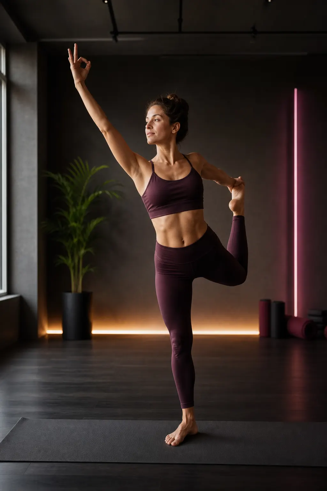

Respiro · Equilibrio · Consapevolezza
Yoga.
Un percorso che unisce movimento e respiro per migliorare mobilità, equilibrio e ascolto del corpo.
Muoversi con presenza
Armonia tra corpo e respiro.
Lo Yoga combina posizioni, respirazione e momenti di concentrazione in una pratica fluida e progressiva. Ogni lezione aiuta a conoscere meglio il proprio corpo, rispettandone possibilità e tempi.
La pratica costante favorisce una mobilità più naturale, una postura consapevole e una sensazione di equilibrio che accompagna anche la vita quotidiana.
Benessere completo
I benefici dello Yoga.
Una pratica che sostiene il corpo, la respirazione e la qualità dell'attenzione.
Flessibilità
Migliora gradualmente elasticità e libertà di movimento.
Postura
Rafforza la consapevolezza dell'allineamento.
Equilibrio
Allena stabilità, coordinazione e controllo.
Respirazione
Aiuta a rendere il respiro più ampio e consapevole.
Concentrazione
Favorisce attenzione e presenza durante la pratica.
Benessere
Aiuta a sciogliere tensioni e ritrovare calma.
Allenati a San Stino
La sede Yoga.
San Stino di Livenza
Via Gallo 12, 30029 Corbolone (VE)Apri in Google Maps →Come funziona
Una lezione di Yoga.
Una lezione a settimana, il giovedì sera, nella palestra di San Stino di Livenza.
Si comincia dal respiro
Qualche minuto seduti per lasciare fuori la giornata e ritrovare un respiro lento e regolare.
Risveglio del corpo
Movimenti dolci per collo, schiena, anche e caviglie: preparano alle posizioni senza forzare.
Sequenza di posizioni
Le asana si costruiscono per gradi, con varianti più semplici o più impegnative a seconda di come stai quel giorno.
Rilassamento finale
Qualche minuto di calma per far sedimentare il lavoro: spesso è la parte che le persone aspettano di più.
A chi si rivolge
Yoga è adatto a te se…
- Adulti di ogni età, anche senza nessuna esperienza di yoga.
- Chi passa molte ore seduto e sente collo, spalle e schiena rigidi.
- Chi riprende a muoversi dopo un periodo fermo e cerca un’attività non traumatica.
- Chi si allena in altri sport e vuole lavorare su mobilità, respiro e recupero.
Alle nostre lezioni di yoga arrivano persone da San Stino di Livenza, La Salute di Livenza, Corbolone, Torre di Mosto, Ceggia e Portogruaro. La prima lezione è gratuita: vieni a vedere com’è prima di decidere.
Prima di iniziare
Domande frequenti.
Serve esperienza per iniziare?
No. Le posizioni vengono proposte per gradi e ogni esercizio ha una variante più semplice. Nella stessa lezione convivono principianti e persone che praticano da anni.
Devo essere flessibile?
No, è il motivo per cui si pratica. La mobilità migliora con la costanza: si parte dal punto in cui sei.
Cosa devo portare?
Abbigliamento comodo e un asciugamano. Si pratica a piedi nudi o con calzini antiscivolo. Se hai un tappetino puoi portarlo: scrivici e ti diciamo cosa serve.
Serve il certificato medico?
Sì, come per tutte le nostre attività. Nella pagina Certificato medico trovi il modulo e come caricarlo.
Posso provare prima di iscrivermi?
Sì, la prima lezione è gratuita e senza impegno. Basta prenotarla dal sito o scriverci su WhatsApp.
Altri percorsi: Pilates · Ginnastica artistica · Pole dance
Inizia il tuo percorso
Vieni a provare Yoga.
Concediti uno spazio per respirare, muoverti e ritrovare equilibrio.